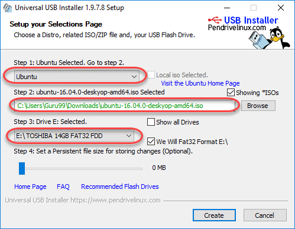
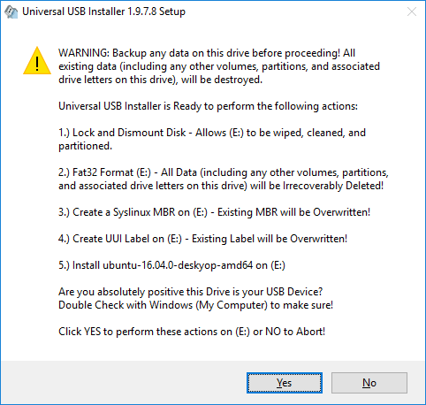
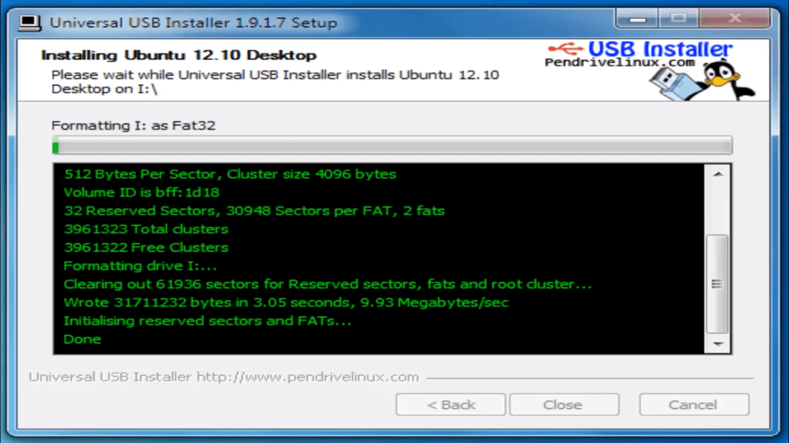
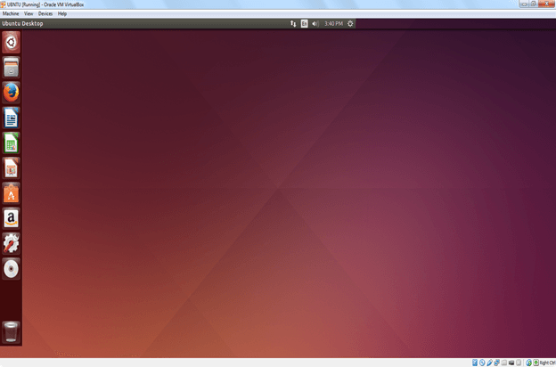

How to Install Linux among Windows
You will need a USB stick
This is one of the easiest methods of installing Ubuntu or any distribution on your computer. Follow the steps to install Ubuntu from USB.

Step 1) Download the .iso or the OS files on your computer from this link.
Step 2) Download free software like 'Universal USB installer' to make a bootable USB stick.

Step 3) Select an Ubuntu Distribution form the dropdown to put on your USB
Select your Ubuntu iso file download in step 1.
Select the drive letter of USB to install Ubuntu and Press create button.
Step 4) Click YES to Install Ubuntu in USB.
Step 5) After everything has been installed and configured, a small window will appear Congratulations! You now have Ubuntu on a USB stick, bootable and ready to go.
Then you need to select disk partition for the Linux installation
Press Win+R to execute command
Then type diskmgmt.msc
Then selelect the disk you want to free space of. Right click on it and choose Shrink disk volume
Type the amount of space you want to free and press ok
Now you have Free unused space for your linux installation
Now Plug the Usb restart the pc and open the Boot menu
Select the region, language, keyboard, layout and your sudo password
The most important part of the installation is Installation Type

Chooose install alongside Windows
Installation process starts. May take up to 30 minutes. Please wait until installation process completes.

After finishing the installation, you will see Ubuntu Desktop.
